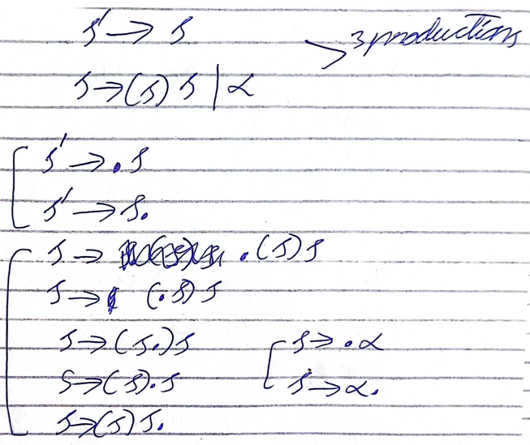
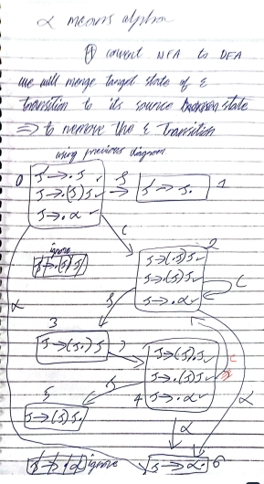

Lexical Rules are those which provide information about alphabets and set of valid words. They are defined by the techniques like
- recursive rules
- regular expressions
- finite automata
- transition graphs
Alphabets are denoted with "capital sigma" symbol and set of valid words are denoted with "capital gamma" symbol.
- Sigma set has to be a finite set (countable).
- set of valid words can either be finite or infinite.
Syntactical Rules define the grammer of a language. The syntax tells how words should be arranged (the order) to form a sentence.
Syntactical Rules can be defined by using various techniques like
- Context Free Grammer
- Push Down Automata
- Turing Machines
- Syntax Diagram
Semantic Rules explains how the sentence should be interpreted. Check whether the sentencs make sense in the context of program. They define the rules for datatypes & type checking and the scope of identifiers and declaration rules.
Semantic Rules can be defined by using techniques like
- Attribute Grammer which use attributes of the language entities to define attribute equation.
Need of Regular Expression
When we need to know about a finite words, we check dictionary to figure out if its valid or invalid. But, what if we have infinite words? In this case, we use some formulas which are called Regular Expressions.
Characteristics of Regular Expressions
- Similar to Arithmetic Expression
- They are word generators and can generate both finite and infinite words.
- words made by a regular expression is a part of its language.
All words that can be generated by a Regular Expression are called language of that Regular Expression & is denoted with L(r) or language of r.
Regular Expression Operations
- Addition (+)
- Product (Concatenate)
- Closure (0 or Many)
Null String
Visible string of length zero, denoted by Capital Lambda or Absalon
All words ending with "ab"
r = (a+b)*ab
all words starting with "a" & ends with a "b"
r = a(a+b+c)*b
all words with exactly "a"
r = (b+c)*a(b+c)*
all "a"s or "b"s
r == aa* + bb*
atleast one "b"
r = (a + b + c)* b (a+b+c)*
at most one "b"
r = (a+c)*b(a+c)*
start and end with different letters
r = a (a + b + c)* (b + c) + b (a + b + c)* (a + c) + c (a + b + c)* (a + b)
odd numbers of "b"
?
20th Oct 2023
Capital Gamma:
Set of all valid words like a dictionary
Regular Expression vs Finite Automata
| Regular Expression | Finite Automata |
|---|---|
| textual format | graphical representation |
| generate words (Left to Right) | recognize words (Right to Left) |
Finite Automata and Regular Expressions are Semantically Equivalent and have the same purpose. Being Textual, Regular Expressions are more difficult as compared to the Finite Automata which is a graphical representation.
Components of Finite Automata
- Alphabets
- Set of finite states
- Initial State
- Intermediate State
- Final State
- set of transitions
They are represented by "Capital Segma" and are never infinite.
States are often called Memory Location. Every state must have a unique identifier (name). It has 3 parts:-
They are always 1.
Can be 0 or many.
Can be 0 or many. Automata is Self Automated Machine. If a Finite Automata doesn't have a final state, it recognizes an empty language.
Transition is a directed edge that allows Finite Automata to move from one state to another. In Finite Automata, transitions are labeled with symbols from sigma set. This process is called Labelling.
-1 => +2 , the value of transition the arrow will have would be in E = {?}, E means Capital Sigma.
Ways to display the Graphs of Finite Automata
- => q0 => q1 => q2 where final form will be enclosed by two circles.
- -1 => 2 => +3
Types of Finite Automata
- Deterministic Finite Automata (DFA)
- Transitions should be Complete.
- Every state must have a unique transitions for every symbol for the sigma set.
- Non-Deterministic Finite Automata (NFA)
- missing transitions
- absolone transitions
- duplicate transitions
determines all transitions. formula: #Q X #E, where Q is set of finite states and E is the sigma set. States X Sigma Members = Transistors
FA becomes NFA, if one or more conditions are full filled.
Characteristics of NFA
Hault isn't a state, when finite automata do not find a single option to move on, it haults.
Language of all words that ends at "ab"
FA = -1 -- (a,b) => 2 -- (b) => +3 where final state (+3) moves back to 2 at "a" and loops at "b"
Representation of NFA
- Graphical Representation
- Mathematical Representation
- Q = {1,2}
- E = {a,b}
- q0 = 1
- F = {2}
- Small Delta
- Table
here, 1 isn't in a set because its a single entity.
it's a set because it can have more than one value.
delta (state, input) = reaches
delta (-1, a) = 1
delta (-1, b) = 2
delta (2, a) = 1
delta (2, b) = 2
| delta | sigma | gamma |
|---|---|---|
 |

|

|
This is the most useful and easy to automate way where rows==states, columns==symbols of alphabets
| a | b | |
|---|---|---|
| -1 | 1 | 2 |
| +2 | 1 | 2 |
25th Oct 2023
CONTEXT FREE GRAMMER (CFGs)
CFGs are used to define the syntax of programming language. CFGs are based on 3 components:-
- Terminals
- Non Terminal
- Set of Productions
Sigma set contains Terminal.
CFGs are similar to Regular Expressions except CFGs has recursion. Both are text based. CFGs are closure for repetitions. The recursion makes CFGs a stronger technique than REs (Regular Expressions).
| Context Free Grammer | Regular Expression |
|---|---|
| textual | textual |
| recursion | no recursion |
| has a lot of words as compared to regular expressions | has a very less words as compared to context free grammer |
| CFGs are used for generating sentences | REs are used for generating words |
| has words in sigma set | has alphabets in sigma set |
what a regular expression can do, context free grammer can also do, but what a context free grammer can do, regular expression may or may not be able to do.
Subsumtion Property
CFGs subsumes REs. A language that can be defined by a regular expression can be defined using a context free grammer. But, the language that can be defined by a context free grammer may or may not be able to be defined by a regular expression.
In general, regular expressions are used to define lexical specification of a language. Whereas, CFGs are uesd to define the syntactic specification of a language.
Meta Symbols in CFGs
meta means those with one specific use or function.
N => ND | D
D => 0 | 1 | 2 | 3 | 4 | 5 | 6 | 7 | 8 | 9
left side represents non terminal which do not terminate. Whereas, right side represents terminals because they terminates the process. The symbol "=>" in between are called productions symbol and the bars "|" represent selection or choice operator. Abselon E represents null.
non terminating can either be on left or on the production in terms of recursion (recalling again).
terminating belong to the sigma set as all the values in terminating must be available in the capital sigma. they can never be at the right side.
Recursion
When an entity refers to itself within its body is called Recursion. Like some Functions call themselves again are known as recursive functions. Recursion is an optional feature in the context free grammer but it is the strengh when used.
N => ND | D, here N is being recalled again so is the recursion.
Types of Recursions
- Simple
- Left
- Right
- Circular
when the recursion happens at the center of two values. A => AaA
when the recursion happens at the left. A => Aa
when the recursion happens at the right. A => aA
A => Aa | AaA | aA | B, here we have total 3 recursions. A is the starting symbol at left (non terminating), followed by left, left, right and right recursions.
B => bBb | E, here we have one recursion that is simple recursion.
BNS : - Backus-Naur Form
How CFGs produce words?
E => (E) | n
here, we have 1 non terminal and 3 terminals i.e. E, (), n values.
1 recursion is happening i.e. simple recursion (at the center of parenthesis).
E => n (smallest possible)
E => (E) => n
E => (E) = ((E))
E is non terminating so can create words again and again.
Thus, the result...
Capital Gamma = {n, (n), ((n))...}
E => (E)
Capital Gamma = {}
null value because, recursive E is non terminating and will produce infinite values. Result can't be displayed until the process is finished which isn't going to happen here.
A => Aa | a
A => a
A => Aa => aa
A => Aa => Aaa => aaa
Thus, Capital Gamma = {a, aa, aaa...} or aa*
27th Oct 2023
CFGs Applications
The applications of Context Free Grammer are:-
- EBNF
- derivations
- Parse Tree
- Syntax Tree
- Ambigous Grammer
- Syntax Diagram
- Parsing Algorithms
start and end with different alphabet
Σ = {a,b}
RE = {a(a+b)*b + b(a+b)*a}
CFG = S => a X b | b X a
X => aX | bX | Ɛ
b at second position
Σ = {a,b}
RE = {(a+b)b(a+b)*}
CFG = S => abX | bbX
X => aX | bX | Ɛ
or
CFG = S => AbX
A => a | b
X => aX | bX | Ɛ
c at second last
Σ = {a,b,c}
RE = {(a+b+c)*c(a+b+c)}
CFG = S => AcX
A => a | b | c
X => a | b | c | Ɛ
?
regular expression for anbn , n>=1
RE = {a*b*} , since its an irregular language which won't stop the process so regular expression isn't possible.
context free grammer for anbn , n>=1
CFG = S => a S b | ab
where, S represents the recursion at center which will be equal for both the surrounding values.
CFG for anbman , n & m >=1
S => a S a | aBa
B => bB | b
CFG for anbm+n
practice question for home
Derivations
It's a process of generating strings which are beginning from start symbol & by applying one or more production rules. It can either be left most or right most derivation. In easy wording it is same as making strings using CFGs.
Importance of Derivations
When we click compile after writing program, computer has CFG of the program and make it again using its own existing CFG. If derivation is correct than ok, else it will display an error.
Assumptions
CFG of language
S => ABC | Ɛ
A => aA | a
B => bB | b
C => cC | Ɛ
the program is "aabbbc"
Using left most derivation:-
1) S => ABC (S => ABC)
2) => aABC (A => aA)
3) => aaABC (A => aA)
4) => aabBC (B => bB)
5) => aabbBC (B => bB)
6) => aabbbBC (B => bB)
7) => aabbbcC (C => cC)
8) => aabbbc (C => Ɛ)
It can also be done using right most derivation and will have almost similar steps to perform.
derivation for:-
exp => exp op exp | (exp) | number
op => + | - | *
this statement has 2 non terminals exp , op
6 terminals ( , ) , number , + , - , *
6 productions which are
1) exp => exp op exp
2) exp => (exp)
3) exp => number
4) op => +
5) op => -
6) op => *
left most derivation for:
30*(40-20)+45
1) number * (40 - 20) + 45
2) number op (40 - 20) + 45
3) number op ... ?
1st November 2023
Parse Tree
The parse trees are built from derivations of strings. Frontend => graphical representation & Backend => data structures
Parse tree is a pointer based tree that has nodes which represent:-
- root node represents the start symbol
- the leaf node represents the terminals
- the interior nodes represents the node terminals
- the sub tree containing a parents and its children represents one step in derivation or production rule.
the interior nodes can be labeled to show the order of the derivation.
exp => exp op exp | (exp) | n
op => + | - | *
derive the following equation:-
30 + 40 * 20
using left most derivation
1) exp => exp op exp [exp => exp op exp]
2) => n op exp [exp => n]
3) => n + exp [op => +]
4) => n + exp op exp [exp => exp op exp]
5) => n + n op exp [exp => n]
6) => n + n + exp [op => *]
7) => n + n + n [exp => n]
make parse tree using the above derivation:-
(following the steps of the derivation to create a tree like structure i.e. parse tree)
values in brackets represent the step in the derivation and will happen on the same time.
exp => exp (1)
exp => op (1)
exp => exp (1)
exp => n (2)
op => + (3)
exp => exp (4)
exp => op (4)
exp => exp (4)
exp => n (5)
op => * (6)
exp => n (7)
exp => exp op exp | (exp) | n
op => + | - | *
derive the following equation:-
30 * (40 - 20) + 40
using left most derivation:-
1) exp => exp op exp [exp => exp op exp]
2) => n op exp [exp => n]
3) => n * exp [op => *]
4) => n * exp op exp [exp => exp op exp]
5) => n * (exp) op exp [exp => (exp)]
6) => n * (exp op exp) op exp [exp => exp op exp]
7) => n * (n op exp) op exp [exp => n]
8) => n * (n - exp) op exp [op => -]
9) => n * (n - n) op exp [exp => n]
10) => n * (n - n) + exp [op => +]
11) => n * (n - n) + n [exp => n]
make parse tree using the above derivation:-
exp => exp (1)
exp => op (1)
exp => exp (1)
exp => n (2)
op => * (3)
exp => exp op exp (4)
exp => (exp) (5)
exp => exp op exp (6)
exp => n (7)
op => - (8)
exp => n (9)
op => + (10)
exp => n (11)
Disadvantage of a Parse Tree
Parse trees are very big which has a lot of unnecessary information so we use Abstract Syntax Tree (AST).
Abstract Syntax Tree
2nd November 2023
Ambiguity & Ambiguis Grammar
If their exist 2 or more parse tree for same string than the grammar is called as Ambigous grammar.
There should be only 1 path to derive a string => parse tree like DFA.
S => S | S*S | SS | () | Epsilon
here, S is non terminal and remaining everything is terminal...
check if its ambigous or not?
Capital Sigma Set E = {Epsilon , + , * , () , ++ , ** , ()() , +() , ()+, *() , ()*...}
How to remove Ambiguity from the Grammar?
There are two ways to remove ambiguity from the ambiguis grammar:-
- re-write the grammar and change those productions that caused the ambiguity. For the above example, remove S+S, S*S, SS. It is beneficial but drains a lot of time.
- define some connective rules that can handle the ambiguous production rules. In this way, grammar remains unchanged but besides grammar there are some additional rules to handle the ambiguity. But, we need to care about additional rules which means more complexity.
2nd Option is better than the first one, complexity is ok but time saving must be there.
EBNF
means Extended Backus Naur Form
EBNF has additional meta symbols (meta means specific use) like , (comma) , () (round brackets) , [] (square brackets) , {} (curly brackets).
- commas are used for concatenation.
- round brackets are used for grouping.
- square brackets are used for optional segment.
- curly brackets are used for repetition.
CONCATENATION (commas)
A => ab | ac
A => a,b | a,c
commas compromise concatenation so shouldn't be used as they are not recommended.
GROUPING (round brackets)
only different values are grouped together.
A => a + b | a - b
A => a (+ | -) b
A => a + b | a - c
A => a (+b | -c)
OPTIONAL SEGMENTS (square brackets)
A => ab | abc
A => ab (epsilon | c) (for explaination)
so...
A => ab[c] (actual result)
if-statement => if (exp) statement | if (exp) statement else statement
if-statement => if (exp) statement [else statement]
REPETITION (curly brackets)
they are used to represent recursions or repetitions.
A => aA | b
A => b {a}
8th Nov 2023
EBNF
A => Aa | Ab | a | b
A => (a | b) A | (a | b) (explaination)
A => (a | b) {(a | b)} (actual EBNF answer for regression)
Syntax Diagram
Syntax Diagram represents CFG (context free grammar) of a language in a graphical format.
CFG is a textual and SD is graphical. Syntax tree uses strings and is very different from syntax diagram. To draw and syntax diagram, the CFG has to be in EBNF.
- Syntax Diagram is a visual or graphical notation in which ovals represent terminals.
- rectanges represent non terminals.
- arrows represent flow.
- label represent the main non terminal of the production.


10th Nov 2023
Parsing
Parsing is used to check the syntax of the grammar. There are 3 types of parsings.
- Predictive Parsing
- Top-Down Parsing
- Recursion Descent
- In case of a non terminal, a corresponding procedure is called.
- In case of a terminal, a "match" operation is performed between the grammar and the input.
- In case of productions, a suitable conditional or iterative statement is applied. Problems are only when we have multiple productions. For repetition, we suit if else conditions.
- LL(1) Parsing Algorithm
- Remove left recursion without converting to EBNF, grammars stays in BNF.
- perform left-factoring.
- compute first and follow sets.
- build the parsing table
- perform the parse using parsing stack.
- Bottom-Up Parsing
- Derivative Parsing
- Backtracking Parsing
There are two types of predictive parsings which are:-
The input program is processed from left to right. It uses left most derivation to perform the parse. It can't work with left most recursion so that must be fixed before continuation. After fixation of left most recursion in the grammar, we apply the algorithms of top-down parsing. These algorithms include:-
It is a simple top-down algorithm which works after the removal of left most recursion from the grammar. To remove the left most recursion, we convert BNF to EBNF (used for syntax diagram and the removal of left recursion). In Recursion Descent, we write the procedures for every non terminal, procedure means functions, we will write a function for all the available non terminals in the grammar. Grammar includes a non terminal, terminal and the production symbols.


Input is to be processed from left to right, left most derivation is to be applied to perform the parse. 1 look ahead token be used to predict the parse.
replace the non terminals and match the terminals.
15th Nov 2023
LL(1) Parsing Algorithm
If we have left recursion, we remove it from grammar. If two or more common symbols at left, we factor them out...
- removing left recursion:-
- left factorization:-
If we have a non terminal with the production of the form A => Aα | β,
where beta doesn't begins with A than we remove left recursion as follows:-
A => βA` , A` means A prime
A` => αA` | epsilon
A => βα*
since staris * can't be written so
A => βA`
A` => αA` | epsilon
E => E + T | T
mapping to the formula, we get
A => Aα | β, where beta represents T, alpha represents + T and A represents E
so...
E => TE`
E` => +TE` | epsilon
if we have a non terminal with productions of the form A => αβ | αγ, where alpha,beta and gamma are combinations of terminals and non terminals then we can do left factoring as follows:-
A => γ


Parsing Algorithms Steps Explaination
First set tells what symbols be the first ones in place of a terminal or non terminal during the derivation process.
- Rule-1:- If X is a terminal then First(X) = {X}
- Rule-2a:- If X is a non terminal and has a product X => X1X2...Xn than First(X) = First(X1)-epsilon
- Rule-2b:-
- Rule-2c:-
Since, the program requires proper calculations to perform the required string from grammar. So, there are rules required. Rules for Calculations:-
the first set of a terminal is terminal itself.
For Example:-
S => ABC
X => X1X2X3 (mapping)
Formula:-
First (X) = First(X1) - epsilon
First (S) = First(A) - epsilon
non terminal will have first set from its first production.
S => Aa | Bb | Cc , where S is the first symbol
let's suppose a grammar for the above
A => aA | epsilon
B => bB | epsilon
C => cC | epsilon
in this scenario, A is the first production of S so the values of A will be assigned to first symbol for S.
first (A) = {a, epsilon}
first (S) = {a} , because epsilon can never be assigned to S.
17th Nov 2023
we have studied rules 1 and 2a, now for epsilon, we use 2b and 2c...
If there is a non-terminal having production of the form X=>X1X2...Xn
and First (X1) contains epsilon then First (X) contains First (X2) - {epsilon}
# If the first production, A of S has an epsilon in it, we move on to the second production of S i.e. B and if B also has epsilon in it, we move on to the third production of S i.e. C.
if a non-terminal X can produce epsilon directly or indirectly than First(X) will contain {epsilon}
S=> ABC
A=> aA | epsilon
B=> bB | c | epsilon
C=> cC | c | d
here is an example for 2c (dealing with indirect epsilon)
| Rules | Pass 1 | Pass 2 |
|---|---|---|
| S=>ABC | skip | First(S) = {a,b,c,d} |
| A=> aA | First(A) = {a} | A=> epsilon | First(A) = {epsilon} |
| B=> bB | First(B) = {b} | |
| B=> c | First(B) = {b,c} | |
| B=> epsilon | First(B) = {b,c,epsilon} | |
| C=> cC | First(C) = {c} | |
| C=> c | First(C) = {c} | |
| C=> d | First(C) = {c,d} |
Formula (rule 2a)
First (X) = First(X1) - epsilon so no epsilon is to be given to X
(rule 2b)
First (A) contains {epsilon}, then we will move on to the next production of S i.e. B and won't give epsilon to S.
Another Example:-
S=> AaB | C
A=> aA | b
B=> bB | b
C=> cC | c
| Rules | Pass 1 | Pass 2 |
|---|---|---|
| S=>AaB | skip | First(S) = {a,b,c} |
| S=> C | skip | |
| A=> aA | First(A) = {a} | A=> b | First(A) = {a,b} |
| B=> bB | First(B) = {b} | |
| B=> b | First(B) = {b} | |
| C=> cC | First(C) = {c} | |
| C=> c | First(C) = {c} |


22nd Nov 2023
Follow Sets
- follow sets are computed only for non-terminals
- an epsilon can't be a member of a follow set
- to compute follow sets, it is required to compute the first sets
Rules:-
There are 3 rules with 2 exceptional cases.
- If S is the start symbol of the grammer, then $ will be in follow(S)
- If there is a production of the form A => X alpha beta then follow(X) will contain first(alpha) - {epsilon}
- if there is a production A=> X alpha beta and first(alpha) contains an epsilon then follow(X) will cotain first(beta) - {epsilon}
- if tehre is a production A => alpha beta X, then follow(X) will contain follow(A)
- if first(X) contains epsilon then follow(beta) will also contain follow(A)
example:-
A=> X alpha beta , where X, first set must be non terminal to compute the follow set.
alpha, terminal and the follow set of the X
after computing X alpha, we move on to alpha beta
A=> X alpha beta
since, alpha is a terminal so we will skip.
A => X alpha beta
if alpha has epsilon then remove it
A => X beta
so beta will be the follow set of X
follow(X) = beta
follow(X) = follow(X)
if last value is a non terminal than follow sets of the label non terminal will be assigned to it.
A=> alpha beta X
if last non terminal X has epsilon, we will replae it with second last non terminal beta.
example:-
A=> ABC | epsilon
B=> bBc | b
C=> cCd | c
writing first set directly
FIRST(A) = {epsilon, b}
FIRST(B) = {b}
FIRST(C) = {c}
| Rules | Ignore | Pass1 (A=>ABC) | Pass1 (B=>bBc) | Pass1 (C=>cCd) |
|---|---|---|---|---|
| A=>ABC | A=> ABC, follow(A) = {$,b} | |||
| A=>epsilon | no follow set | |||
| B=>bBc | FOLLOW(B) = {c} | |||
| B=>b | terminal | |||
| C=>cCd | FOLLOW(C) = {$,b} (we can remove this as it is modified next) | FOLLOW(C) = {$,b,d} | ||
| C=>c | terminal |
if epsilon or terminal appear then follow sets are not possible so we skip them.
A => ABC
since A (non terminal) has epsilon in its first set, so will move on to B (non terminal). Since, B has no epsilon so the rules will end on it.
E => EAT | T
A => + | -
T => TMF | F
M => *
F => (E) | n
| Rules | Pass1 | Pass2 | Pass3 |
|---|---|---|---|
| E=> EAT | skip | skip | |
| E=>T | skip | skip | E = {(,n} |
| A=> + | FIRST(A) = {+} | ||
| A=> - | FIRST(A) = {+,-} | ||
| T => TMF | skip | ||
| T => F | skip | T = {(,n} | |
| M => * | FIRST(M) = {*} | ||
| F => (E) | FIRST(F) = {(} | ||
| F => n | FIRST(F) = {(,n} |
6th December 2023
First Set:-
S => (S) S | Epsilon
| FIRST | FOLLOW | |
|---|---|---|
| S | {(, epsilon} | {$, )} |
dollar is used in place of terminal.
LL1-Parsing Algorithm
Building the Parsing Table
column represents terminals i.e. (,), epsilon
rows represents the non terminals i.e. S
S => (S) S | Epsilon
epsilon is invisible in the parsing table.
| ( | ) | $ | |
|---|---|---|---|
| S | S => (S)S (came on the basis of first rule) | S => epsilon (came on the basis of follow set) | S => epsilon (came on the basis of follow set) |
LL1 uses lookahead symbol. Therefore, dollar symbol is used in the end.
cells are filled on the basis of first sets and follow sets (if first set has epsilon). Some cells may or maynot be filled.
( is produced by first production so wrote first production.
If we have only epsilon in first set, then we use follow sets. Otherwise, they are not used.
Epsilon is not used in the first set until all non terminals have epsilon values.
S => ABC
A => aA | b | epsilon
B => bB | epsilon
C => cC | epsilon
| FIRST SETS | FOLLOW SETS | |
|---|---|---|
| S | {a,b,c,epsilon} | {$} |
| A | {a,b,epsilon} | {$,b,c} |
| B | {b, epsilon} | {$, c} |
| C | {b, epsilon} | {$} |
Parsing Table
| a | b | c | $ | |
|---|---|---|---|---|
| S | S => ABC | S => ABC | S => ABC | S => ABC (since S has epsilon) |
| A | A => aA | A => b , A => epsilon | A => epsilon | A => epsilon (since A has epsilon) |
| B | B => bB | B => epsilon | B => epsilon (since B has epsilon) | |
| C | C => cC | C => epsilon (since C has epsilon) |
Syntax Checking / Performing the Parse
LL1-Actions
- Replace for Non Terminals
- Match for Terminals
| No. | Parsing Stack | Input | Action |
|---|---|---|---|
| 1 | $S | ()$ | replace S => (S)S |
| 2 | $S)S( | ()$ | match |
| 3 | $S)S | )$ | replace S => epsilon |
| 4 | $S) | )$ | match |
| 5 | $S | $ | replace S => epsilon |
| 6 | $ | $ | input accepted |
Solve the following:- (()) ()
1) first set
2) follow set
3) parsing table
4) LL1-Actions
Solve the following:-
E => EAT | T
A => + | -
T => TMF | F
M => *
F => (E) | n
remove left recursion...
Dec 13th, 2023
Bottom-Up Parsing
unlike top-down parsing which involve left most derivation, bottom-up parsing involve right most parsing.
It involve the following steps:-
- right most derivation
- a new start symbol will be introduced in the grammer
- bottom-up parsing algo use DFA for parsing
- unlike LL(1) parsing which involves replace and match actions, bottom up involves shift (terminals) and reduce (non terminals) actions.
- that's the reason why bottom-up is also known as shift reduce parsing algorithm.
- famous algorithms for bottom-up parsing includes LR(0) and LR(1)
S` => S, where S` means S prime
S => (S)S | alpha
LR(0)
it has no problem with left recursion and has the following steps.
- introduce a new start symbol
- list LR(0) items (by appending dots))
- construction of NFA of LR(0) items
- convert that NFA to DFA
- build LR(0) parsing table
- perform parsing using parsing stack
For Example: -
S` => S
S => (S)S | alpha
step 2
since, the question has 3 productions, we will have to append the dots (listing LR(0) items) to all of them separately. dot is places before and after every word until it reaches the end of the statement or the sentence. LR(0) items are of three main types.
1) Beginning LR(0) item: dot at first (.a)
2) Complete LR(0) item: dot at end (a.)
3) intermediate LR(0) item: dot in between the sentence (a.a)

step 3
at first, we create the individual transitions that are taking place and then we fire epsilon transitions on the basis of 2 conditions. epsilon transition is fired only from the non terminal and secondly, the target state non terminal must also be equal to the source state non terminal.
to remove any confusion, making it again
step 4
once, the transitions are completed and epsilon transitions are also fired, we will convert NFA to DFA. In the convertion procedure, we have to combine the entries on the basis of a condition. The target state of epsilon is merged to the source state of epsilon. this is to remove the epsilon which isn't present in DFAs.

step 5
Build LR(0) parsing table
if we have beginning and intermediates LR(0) items, we consider them in shift state. otherwise, for complete LR(0) items, we consider them in reduced states.
important practice question:- E => E + n | n
Dec 15th, 2023
Building LR(0) Parsing Table
here, I'll be using a instead of alpha, mistake which I did in the beginning and continued it until here. But, it's over now.
| States | Actions | Rules | Inputs (non terminals) | Go To (terminals) | ||
|---|---|---|---|---|---|---|
| ( | alpha / a | ) | ||||
| 0 | Shift | 2 | 6 | 1 | ||
| 1 | Reduced | S`=>S | ||||
| 2 | Shift | 2 | 6 | 3 | ||
| 3 | Shift | 4 | ||||
| 4 | Shift | 2 | 6 | 5 | ||
| 5 | Reduced | S => (S)S | ||||
| 6 | Reduced | S=>a | ||||